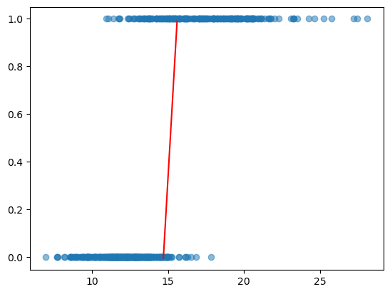
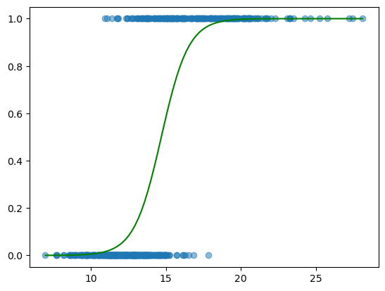

In the last post, we discussed the basics of Linear Regression and showed an example of how it could be used to estimate a given value based on input parameters. In this section, we’ll talk about a similar concept known as Classification.
A model that is used for classification uses input features to predict a class. The class is a selection from a discrete set of classes. For example, a classification model could be trained for identifying whether an online store review is positive or negative. Another example is classifying a person’s facial expression as happy, sad, bored, scared, and so on. Classification can be used for many unique and useful purposes, and luckily, the metrics to determine the performance of a classification model are very simple.
However, there is one large difference between what we have seen so far for regression and what we will see for classification. In the last post, we looked at Linear Regression and Nonlinear Regression, and as it turns out, these are the main forms that are used. There are a few others (Ridge Regression, Lasso Regression, etc.), but they are very nuanced and have subtle differences. Classification, on the other hand, has many different algorithms that all have their own positives and negatives. Therefore, this post will look less at the mathematical theory and more at the applications and usage of each of the popular classification model types.
Binary Classification
The Dataset
The simplest type of classification is, unsurprisingly, Binary Classification. However, as we will discover later, classification for multiple output classes is very similar to binary classification.
Before we get too deep into the theory though, let’s talk about our dataset. We will be using the “Breast Cancer Wisconsin” dataset, which contains measurements of breast cancer tumors and a classification based on if they’re malignant or benign. The data was obtained using digitized imagery from a process known as fine needle aspiratation. More details about the data collection can be found in the following paper:
Street, W. Nick, William H. Wolberg, and Olvi L. Mangasarian. “Nuclear feature extraction for breast tumor diagnosis.” Biomedical image processing and biomedical visualization. Vol. 1905. SPIE, 1993.
Interestingly, the paper itself also contains a classification model that performs very well. What is even more impressive is that this was accomplished in 1992!
The dataset is obtained from Kaggle, and contains information such as the average radius, area, smoothness, symmetry, and a few other unique values. The page also contains a link to the UCI Machine Learning Repository, which shows graphs of the performance of different classification models, all of which surpass \(90\%\) accuracy.
Just like the previous et’s take a look at the data:
import matplotlib.pyplot as pltimport pandas as pddf = pd.read_csv('cancer.csv', encoding='windows-1252')df.head()
Now that we’ve seen some of the data, let’s move on to our first model.
Logistic Regression
Logistic Regression has a very strong relationship to Linear Regression. In fact, it actually uses the Linear Regression equation in its own equation! To get a feel for how it works, let’s plot some data.
First, we have to convert the output labels into numbers so that we can actually plot them. We will assign a value of 1 to malignant tumors and 0 to benign tumors.
arr = [1if element =="M"else0for element in df['diagnosis']]df.insert(33, "diagnosis_number", arr)
Now, let’s plot the diagnoses against the mean radius:
We can see that tumors below ~\(12\) millimeters are guaranteed to be benign, while tumors above ~\(18\) are guaranteed to be malignant. The gray area is in between these two numbers.
Now, imagine trying to fit a Linear Regression line to this. Of course, it doesn’t make much sense to do this, since our data clearly does not have a linear relationship. But just for fun, let’s imagine that we did. This line would clearly pass through both groupings of values, with each end of the line somewhere near the most dense areas of the data. However, since we’re not trying to make predictions on an output value but rather an output class, we need to modify this line to vary only between \(0\) and \(1\). The best function to do this with is the sigmoid function:
\[f(x) = \frac{1}{1 + e^{-x}}\]
Since we’re modifying the line itself, our the variable in the exponential of our sigmoid is going to be replaced with the equation for the Linear Regression line. If you don’t recall, that was:
That’s it! It’s as simple as modifying a Linear Regression line. Of course, there is a lot more theory behind Logistic Regression, but this is essentially all it takes to understand what is happening.
Before we get into using it, though, we need to talk about one thing that is very important for classification. In order to measure how well our model is performing, we need to separate our data. The reason for this is that if you train you model on all of the data you have, then you can only test it on data that the model has already been trained on. This means you won’t be able to effectively measure how well your model generalizes to new data. To combot this, the dataset is almost always split into two different sets: the training set, and the test set. The most common ratio to use for split is \(80/20\), so we’ll try that out:
Notice that we trained our model on the training set, and we get around \(88.8\%\) accuracy when we compare it to the training set itself. However, when we compare it to the test set, we only get around \(84\%\). This is why it’s important to have different sets for training and testing. Either way, getting more than 4 out of 5 guesses right isn’t bad at all.
Now, let’s do a visualization of the Linear Regression line and Logistic Regression curve:
b0 = clf.intercept_[0]b1 = clf.coef_[0][0]plt.scatter(df['radius_mean'], df['diagnosis_number'], alpha=0.5)xaxis = np.linspace(14.7, 15.6, 100).reshape(100, 1)yaxis = [(element * b1) + b0 for element in xaxis]plt.plot(xaxis, yaxis, "red")plt.show()

There’s the Linear Regression line. Let’s see what it looks like after transforming it:
plt.scatter(df['radius_mean'], df['diagnosis_number'], alpha=0.5)xaxis = np.linspace(min(df['radius_mean']), max(df['radius_mean']), 100).reshape(100, 1)yaxis = [1/ (1+ np.exp(-1* ((element * b1) + b0))) for element in xaxis]plt.plot(xaxis, yaxis, "green")plt.show()

Very nice! We have a smooth variation from \(0\) to \(1\), whereas the Linear Regression would continue forever in either direction.
It’s definitely working. But that raises a question: “why not just use linear regression and have the decision be based on the midpoint of the line?” That is a very good question. You could, for example, find the \(x\) value that corresponds to \(y = 0.5\) on the line and classify any measurement that is greather than that \(x\) value as a \(1\), and \(0\) for any values less than that \(x\) value. The thing this misses is the probability. Since Logistic Regression curves vary between \(0\) and \(1\), the probability of the measurement belonging to a class is given by the curve itself. Here’s an example:
print("Measurement 1:", measurement_1, "millimeters")measurement1_prob = clf.predict_proba(np.array([measurement_1]).reshape(1, -1))measurement1_class1_prob = measurement1_prob[0][0]measurement1_class2_prob = measurement1_prob[0][1]print("Probability of being benign:", round(measurement1_class1_prob *100, 2), "%")print("Probability of being malignant:", round(measurement1_class2_prob *100, 2), "%\n")print("Measurement 2:", measurement_2, "millimeters")measurement2_prob = clf.predict_proba(np.array([measurement_2]).reshape(1, -1))measurement2_class1_prob = measurement2_prob[0][0]measurement2_class2_prob = measurement2_prob[0][1]print("Probability of being benign:", round(measurement2_class1_prob *100, 2), "%")print("Probability of being malignant:", round(measurement2_class2_prob *100, 2), "%\n")
Measurement 1: 12 millimeters
Probability of being benign: 95.17 %
Probability of being malignant: 4.83 %
Measurement 2: 18 millimeters
Probability of being benign: 2.57 %
Probability of being malignant: 97.43 %
Super neat, right? Let’s try to find the point that is the hardest to classify:
Now, let’s move away from the guesswork and check what metrics we have to guage our model’s classification performance. If we had more insight than just raw percentages, we might be able to tune our model for our specific purpose.
We’re going to look at something called the confusion matrix:
The vertical axis represents actual benign or malignant classes, while the horizontal axis represents the classification that our model made. You can see that our model correctly classified \(263\) benign tumors and \(141\) malignant tumors, but accidentally flagged \(19\) benign tumors as malignant, and let \(32\) malignant tumors fly under the radar as benign.
The bottom right value represents True Positives (TP), while the top left value represents True Negatives (TN). Conversely, the top right value represents False Positives (FP) and the bottom left value represents False Negatives (FN). Here’s another way to look at it:
This matrix gives us a good idea of what kind of mistakes our model is making. Now, let’s look at the two main numeric metrics that are used to rate the performance of our model.
Precision and Recall
We’ll start with Precision first. Precision is the ratio of true positives to total positive guesses. In other words, it is a metric that describes how many positive classifications that we were actually right about, relative to how many positives that we said there were. Mathematically:
This means that out of all tumors that our model said were malignant, roughly \(88\%\) were actually malignant.
The other main metric is Recall. Recall is the ratio of true positives to total positives. In other words, it is a metric that describes how many positive classifications that we were right about, relative to how many positives there actually were. Mathematically:
This tells us that our classifier only classified roughly \(81.5\%\) of all malignant tumors correctly.
To see the difference between these two metrics, let’s imagine that these images of malignant tumors are known criminals, and we’re guards on the look out. Our precision and recall tell us that our classifier let nearly \(18.5\%\) (\(1 - \mathrm{Recall} = 100\% - 81.5\%\)) of all criminals sneak by, and out of all the people we stopped, around \(12\%\) (\(1 - \mathrm{Precision} = 100\% - 88\%\)) of them were innocent civilians!
As it turns out, for any model that has some error, the precision and recall values are inextricably linked. Looking back at our “civilian vs. criminal” example, let’s think about how we might try to classify civilians from criminals. Assuming we could see all the individuals at once, we may use some identifiable features or behaviors to set a “score” to each person. A person with a higher “score” is more likely to be a criminal, and a lower “score” means that person is probably a civilian. Once we’ve assigned each person a score, we need to set a threshold value above which we will assume all people are criminals, and below which we will assume all people are civilians.
Once we have a score for each person and all of those scores are placed in order along a horizontal number line, we can set a vertical dividing line with all scores on the right side containing scores belonging to criminals and the left side containing scores belonging to civilians. Now, assuming our model is imperfect, we will have some civilians on the right side of the line (false positives) and some criminals on the left side of the line (false negatives). If we shift our threshold to the right, this stops classifying so many civilians as criminals, but it also stops classifying so many criminals as criminals. In other words, the number of false positives will go down, but the number of false negatives will go up. Looking at our equations for precision and recall again:
We can see that the decrease of false positives will cause precision to increase, but the increase in false negatives will cause the recall to decrease. Theoretically, if we moved the threshold all the way to the right so that no one’s score is high enough to be classified as a criminal, we would theoretically have a precision of \(100\%\)! This is great on paper, but it is only occurring because we’re not classying anyone as a criminal, so we have no room to fail. In other words, “you miss 100% of the shots you don’t take”.
Conversely, if we move the threshold to the left, our number of classified criminals will increase, but we will also be classifying more civilians as criminals. In other words, the number of false negatives will go down, but the number of false positives will go up. We can see from the equations above that this will result in the decrease of precision and the increase of recall. Again, if the threshold reaches the very edge, and we classify all people as criminals, then our recall looks good on paper (\(100\%\)), but only because we’re accusing everyone of being a criminal. In other words, “you will hit 100% of your shots, if you take every shot possible”.
This conundrum is known as the Precision-Recall Tradeoff. We can visualize the changing of the precision and recall with the shifting of the threshold using a graph:
It is up to us as the model designers to create a model that has the properties we desire. In the case of breast cancer classification, is it better to have higher precision, higher recall, or a mix of both? Well, a false negative could be the difference between life and death, whereas a false positive is not as serious. Therefore, it is in our best interest to lower the amount of false negatives as much as possible, even if there’s an increase in false positives. This, in turn, will raise our recall and lower our precision. This means we need to lower our threshold.
Looking at the left side of the above figure, we can see that the recall settles at \(1\) for quite a while, and the precision settles at roughly \(0.4\). We could choose a threshold as far to the left as possible, but we can see that shifting it to the right will slightly raise our precision without affecting our recall much. Let’s use a threshold of \(-5\) and see what we get:
Sure enough, we find every malignant tumor, but with the drawback that we also accidentally classify nearly \(60\%\) of benign tumors as malignant as well.
When you think about it, this isn’t too bad. Usually, tumors of any size would be cause for concern, and most people would safely operate under the assumption that their tumor is malignant and get it removed as soon as possible. This is the same as shifting the threshold all the way to the left and classifying everyone as a criminal. In this situation, we can actually say that our model has improved things substantially by still catching all malignant tumors, but also allowing more than \(40\%\) of people to not have to get an operation.
This post will eventually be updated to include:
Other metrics: \(F_1\) Score, PR Curves, ROC curves, etc.
Multiclass Classification
Other classification methods: Naïve Bayes, K-Nearest Neighbors, Decision Trees, Support Vector Machines, etc.